Figure 3. Jet-swell observed in flow of low-grade molasses.
By
G. D. McBain*, J. A. Harris*, Y. K. Leong* and S. Vigh**
*School of Engineering, James Cook University **CSR Ltd
KEYWORDS: Molasses Flow, Rheology, Viscoelasticity, Jet-swell, Continuous Crystallizer, Pipe Fittings.
Previous studies have established that the viscosity of low-grade molasses and massecuites depends on the shear rate, temperature and composition. It has also been hinted that these fluids are not merely viscous but rather viscoelastic. This result is not unexpected, given the presence of dissolved high polymers (polysaccharides). After a brief general discussion of fluid rheology, the present paper describes an experiment performed on Queensland low-grade molasses to exhibit its viscoelasticity. When forced from a pipe, viscoelastic fluids swell markedly. A photograph of such an event is presented here and also used to estimate the fluid's viscoelastic relaxation time. The result, about a tenth of a second, is consistent with the values determined for French beet molasses by Devillers and Phélizot (1971) using a Weissenberg rheogoniometer. The estimated relaxation time is used to assess the possible impact of viscoelasticity in two factory processes: stirring in cooling crystallizers and flow through pipe fittings. It is concluded that viscoelasticity may play a role in the known tendency of low-grade massecuites to short-circuit in vessels of complex geometry and also may explain the anomalous published pressure-drop data for molasses flow in pipe-fittings.
It is well established that low-grade massecuites and molasses are rheologically complex fluids and that knowledge of their flow properties is important for the design, control and understanding of factory processes. Numerous studies have quantified the effects of temperature, composition and the shear rate on the viscosity of Queensland massecuites and molasses (e.g. Behne, 1964; Bhattacharyya et al., 1972; Awang and White, 1976). However, there has also been speculation that these materials are not purely viscous, but rather viscoelastic (Ness, 1984). This is, indeed, to be expected, since the principal factor rendering these fluids non-Newtonian, and so distinguishing them from Newtonian pure sugar solutions, is the presence of polysaccharides (Geronimos and Greenfield, 1978): components known to induce both pseudoplasticity and elasticity (Lapasin and Pricl, 1995).
Since being applied to the processing of Australian cane sugar five years ago (Harris et al., 1995; Steindl, 1995), computational fluid dynamics (CFD) has come to play an important role in the understanding of flow and heat transfer in factory processes and in the assessment of modifications to vessel designs (Steindl, 1997; Sima and Harris, 1999). The single greatest strength of CFD is its ability to provide a local description of the flow. While dye or lithium tracer tests may be able to indicate the presence of short-circuits or dead-spots, they do not indicate their location.
The price which must be paid for this increase in local knowledge is the provision of local material properties (Sima and Harris, 1997). Thus, while a simple parameter such as the viscosity obtained from a one-dimensional shear flow, or `viscometric' flow, is adequate and appropriate for use in the global modelling of a vessel, it cannot be assumed that the behaviour of a fluid in a two- or three-dimensional flow can be predicted on the basis of observations of one-dimensional flows (Truesdell, 1974). It is the special property of Newtonian fluids that this simplification is possible for them; the uncritical extension of this simplification to non-Newtonian fluids is at best an expedient (Bird et al., 1960, p. 103; Fredrickson, 1964, p. 86; Tanner, 1988, p. 131). The purpose of this paper is to determine, on the basis of simple and readily repeatable measurements, the extent to which this simplification may be acceptable for low-grade molasses.
If present, viscoelasticity manifests itself in all unsteady flows as well as in steady flows in complex geometries (as occur in continuous factory vessels) but cannot be detected by the usual measurements of steady viscometric flows such as occur in pipeline or concentric-cylinder viscometers; except for the empirical fact that all known shear-thinning fluids are also appreciably viscoelastic (Fredrickson, 1964, p. 70). Elastic effects are more marked when the fluid is subjected to more rapid changes; this rapidity, and thus the importance of viscoelasticity, for a given fluid in a given flow can be quantified by the dimensionless Deborah number De, as defined and discussed below.
Two phenomena peculiar to elastic fluids are stress relaxation and jet-swell (the dramatic and readily observable increase in diameter of a viscoelastic stream leaving a pipe). Using the former, and a Weissenberg rheogoniometer, Devillers and Phélizot (1971) determined the viscoelastic properties of beet molasses. In this paper, we report new experiments on the jet-swell of low-grade Queensland molasses which indicate comparable elastic properties. From the results we estimate Deborah numbers for various flows occurring in sugar factories and so assess where elastic effects may be most significant.
The Deborah number quantifies the difference between the deformation behaviour of (elastic) solids and (viscous) liquids. We give an elementary explanation, following Lapasin and Pricl (1995, p. 164). The Deborah number is defined as the ratio between a characteristic relaxation time, λ, of the material and a characteristic residence time of the deformation process under observation. The relaxation time is zero for an inelastic viscous fluid and infinite for a elastic solid. The rheological properties of a substance can be easily classified as liquid-like when the relaxation time is much shorter than the residence time and as solid-like when it is much longer. In other words, high Deborah numbers correspond to solid-like behaviour and low Deborah numbers to liquid-like behaviour. In the intermediate region, materials may display a combination of both properties and their behaviour is called viscoelastic. Material relaxation times range from picoseconds for water or atmospheric air and nanoseconds for mineral oils through microseconds to kiloseconds for various polymer solutions and melts to megaseconds for glass (Tanner, 1988, p. 22).
Mathematically, the difference between Newtonian and non-Newtonian fluids lies in their constitutive relation: the relation between the stress s and the rate of deformation d. For a Newtonian liquid,
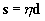 (1)
where η is the viscosity. The viscosity will in general depend on pressure, temperature and composition. If it also depends on the deformation rate, but (1) otherwise holds, then we have a generalized Newtonian fluid (Lapasin and Pricl, 1995, p. 216). The simplest model of a generalized Newtonian fluid is the power-law model, for which 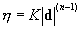, where K is the consistency and n is the flow behaviour index. If , the fluid is said to be pseudoplastic or shear-thinning.
For a viscoelastic fluid, the stress depends not only on the instantaneous rate of deformation, but also on the entire history of the deformation. Many different forms of constitutive equations for viscoelastic liquids are discussed by Larson (1988). Their common feature is that the liquid has a fading memory of past configurations; the time-scale for the fading of the memory is the relaxation time. They all reduce to the Newtonian form (1) when the Deborah number becomes vanishingly small.
A simple consequence of the fading memory of a viscoelastic fluid is that if it is subjected to a steady shearing and then this ceases, the associated stress does not immediately disappear, but rather decays. Devillers and Phélizot (1971) measured the stress as a function of time in 12 beet molasses samples after bringing a spinning cone-and-plate viscometer to a halt, and calculated the relaxation time by fitting an exponential decay function to the results. The resulting relaxation times were in the range 0.05-0.2 s. This technique is capable of high accuracy.
Another feature of the flow of viscoelastic liquids is the expansion of jets. Depending on the liquid and the flow rate, it can be quite strikingsee the photographs by Merrington (1943) or Tanner (1988, p. 306). This phenomenon is of great importance in the plastics industry, particularly in the spinning of synthetic fibres (Tanner, 1988, p. 282) and blow molding (Eggen and Hinrichsen, 1996).
When a Newtonian liquid leaves a pipe, it usually contracts slightly. This effect, which is easily demonstrated with a kitchen tap, is due to inertia; in this case, the fluid which was previously slowed by contact with the pipe walls simply adopts the speed of the more freely flowing fluid on the centreline. If the fluid is very viscous (so that inertia becomes negligible) but still Newtonian, the jet will expand by about 13%; here the small change is caused by the rearrangement of the velocity field from the parabolic profile inside the pipe to the plug flow in the free jet.
For pseudoplastic generalized Newtonian fluids, the swelling is less than for Newtonian fluids; it decreases to zero with the flow behaviour index n (Tanner, 1988, p. 327). This result is known only from computer simulations; there being no known inelastic pseudoplastic fluids. It occurs because the velocity profile in the pipe flow of a pseudoplastic fluid is closer to plug flow than the parabolic profile of a Newtonian fluid, so that less adjustment is required from the pipe to the jet.
Marked swelling is a characteristic of viscoelasticity. To see why a fading memory causes jet-swell, consider a pair of fluid elements in a pipe flow (see figure 1). The element nearer the axis flows faster, so that at any given time, the pair are further apart in the axial direction than they were in the past. When they leave the pipe, the shear caused by the no-slip condition at the pipe wall ceases, and the pair are free to return to their remembered configuration. This causes an axial contraction and so a lateral expansion (in order for the jet to have the same flow rate as the pipe). The longer the memory of the fluid (the longer the relaxation time), the greater the axial and lateral recoil.
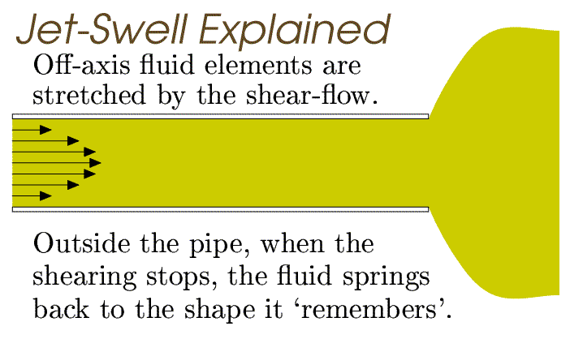
Figure 1: An explanation for the swelling of viscoelastic jets. The fluid-particle pair AB becomes elongated in the axial direction due to shear. On exiting, it reverts toward its remembered shape.
By expressing the above argument in the language of tensor analysis, and assuming a particular simple constitutive equation known as the Lodge equation (Larson, 1988, p. 23), Tanner (1970) developed a theory of jet-swell which allows the prediction of the swelling ratio D/d (where D is the jet diameter and d is the pipe diameter) from the dimensionless Weissenberg number Wi, the product of the shear rate at the pipe wall 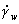 and the relaxation time of the fluid λ. The resulting relation,
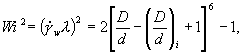 (2)
where (D/d)i = 1.13 is the inelastic swelling ratio, is plotted in see figure 2.
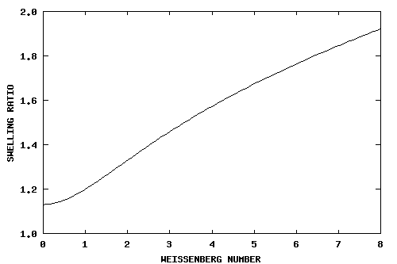 >
Figure 2. Jet expansion as predicted by Tanner
(1970).
A swelling jet of low-grade molasses can be generated by forcing it through the outlet pipe of a pressure filter. This simple piston device is more usually employed to separate molasses from massecuite. The only modification to the device for the tests was to fit a new copper molasses outlet pipe. For filtration, the outlet is of little interest, but it is known that jet-swell can be affected by the length-to-diameter ratio of the pipe unless it is very long: in a short pipe, a viscoelastic fluid can remember the conditions upstream of the inlet (Seriai et al., 1993). Guided by Seriai's results and the recommendation of Binnington and Boger (1981), a length-to-diameter ratio of 20 was chosen. The pipe was straight and vertical (downward) for the last 145 mm before the outlet and the internal diameter of the pipe was 7.2 mm.
A sample of C-massecuite was obtained from downstream of the exit pump of the vertical cooling crystallizer at Victoria Mill. The massecuite was passed through the pressure filter and the molasses collected. After cleaning the filter and removing the gauze, the molasses was passed through again. Once a steady jet was being produced, a measuring beaker was placed in the stream and a stopwatch started. After an easily measurable amount had been collected but before the jet flow rate declined significantly (the pressure filter is a batch device), the beaker was removed, the timer stopped, and the temperature of the extrudate measured with a mercury-in-glass thermometer. Digital photographs were taken throughout the operation, from which the diameter of the jet could be compared with the external diameter of the pipe (9.2 mm).
A photograph taken soon after the establishment of steady-state is shown in figure 3. It is clear from the photograph (figure 3) that gravity did have an effect on jet: it becomes increasingly thin as the molasses is drawn down by its weight. The effect is less important in the immediate vicinity of the outlet. The diameter considered here is the maximum; this will be slightly less than would occur in the absence of gravity and so will lead to an underestimate of the swelling and hence the relaxation time and the elasticity. Thus, while gravity (and surface tension which also acts to reduce the jet diameter-Tanner, 1988, p. 323) does reduce the quantitative accuracy of our results, it does not detract from our primary contention that low-grade molasses is viscoelastic.
Figure 3. Jet-swell observed in flow of
low-grade molasses.
In the photograph shown, the maximum jet diameter is 11 mm, which equates to a swelling ratio of . This value may be compared with the 1.13 expected for a Newtonian fluid. From Tanner's formula (2) or figure 2, implies . In the same run, 180 mL of molasses were extruded in 210 s. From this flow rate and assuming a parabolic velocity profile in the pipe (accounting for shear-thinning would give a different value, but, again, neglecting it only leads to an underestimate of the relaxation time) the wall shear rate is 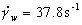. Hence, the relaxation time is 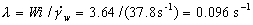. From the other photographs in the series, it was apparent that the swelling reduced slightly with time; a consequence of a slow decay in the flow rate. The swelling ratio fell to about 1.32 over the course of the 210 s, which would correspond to an estimated relaxation time of 0.078 s. Thus, to an appropriate level of accuracy, the relaxation time may be stated as about a tenth of a second, a value quite consistent with those determined by Devillers and Phélizot (1971) for beet molasses. The temperature of the extrudate was 50±5°C. Standard methods of analysis revealed the molasses to be a fairly normal low-grade specimen: the dry substance was 86.4% and the purity 45.8%. The original massecuite was 91% dry substance and about 68% purity.
It is obvious that a single measurement is not sufficient to quantitatively determine the relaxation time, but that is not the purpose of the present paper. Indeed, although the ease of observation and measurement have tempted many investigators to try and base a rheometrical method on jet-swell, various difficulties including the effect of gravity and nonlinearities in the constitutive equation (Binnington and Boger, 1981) have meant that an adequate jet-swell model remains elusive. More precise techniques are discussed by Lapasin and Pricl (1995, pp. 423-435, ch. 5). The present determination, supported to some extent by the results for beet molasses, should, however, be sufficient for order-of-magnitude analyses. Two examples are provided in the next section.
The strongest deformation in a vertical cooling crystallizer, for example the one installed at Victoria Mill (described by Sima and Harris, 1997), is due to the passage of the stirrer arms at their ends. To assess the importance of viscoelasticity in this flow, we calculate the Deborah number, assuming the figure of 0.1 s for the massecuite relaxation time (what effect the crystals might have on the elasticity is unclear at this stage). To obtain a characteristic time for the deformation process, consider the time taken for the end of one of the stirrer arms to pass through a given point; i.e. its diameter divided by its linear velocity. According to Robinson (1994, p. 72), the stirrer arms are 143 mm in diameter, 1794 mm long and rotate at 0.3 rpm, hence the linear speed of the end is 56 mm/s and the time of traverse is 2.5 s. This gives a Deborah number of . This is small compared to unity, but the question now is whether it is so small that viscoelastic effects will be negligible.
Cochrane et al. (1981) presented streak-line photographs of the flow of a Newtonian and a viscoelastic fluid over a cylinder set slightly off-centre in a channel. The Deborah numbers were zero and 0.17, respectively. At zero Deborah number the asymmetry is barely discernible whereas it is exaggerated at 0.17. It is impossible to provide a definitive statement in the absence of results at intermediate Deborah numbers, but we conjecture that while elastic effects might be measurable in the vertical cooling crystallizer, they are probably not dominant.
One conclusion of Cochrane et al. (1981) may be significant, however. After examining a number of flow configurations, they found symmetry to be an elusive feature in the flow of highly elastic liquids. Perhaps the viscoelasticity of low-grade cane sugar solutions contributes to their tendency to short-circuit in process vessels of complex internal geometry (Keast and Sichter, 1984).
Similarly, if a molasses has a tendency to avoid narrow flow passages, due to the presence of a viscoelasticity-inducing component, it will very likely be more difficult to fugal. Successful separation involves the migration of the molasses through the pores of the packed bed of sugar crystals adjacent the wire-mesh basket and the holes of the basket itself. A more elastic molasses would be more inclined to travel with the bulk motion of the crystals. Thus, viscoelasticity may be an important parameter in the separability of low-grade massecuites by centrifugation.
While liquid elasticity is not important for flow inside straight pipes, it may have an effect on flow around bends. A characteristic deformation time to use in the Deborah number can be obtained from the time to traverse one radian of the bend at the mean flow speed V:
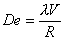 (3)
where R is the radius of the bend. If, for simplicity, the effect of pseudoplasticity is neglected, the Reynolds number is given by , where r is the pipe radius and ρ is the density. Both Re and De can be considered as dimensionless speeds; they are related by
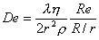 (4)
A tighter bend (smaller R/r) corresponds to a more rapid deformation and a higher Deborah number.
Bojcic et al. (1997) published experimental friction factors for the flow of molasses in various pipe fittings. A remarkable feature of the results was a discontinuity in the friction factor at a certain critical Reynolds number. The data for the four fittings examined by Bojcic et al. (1997) are listed in table 1. The last column contains our estimate of the corresponding critical Deborah number, assuming the following material properties: 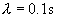, 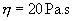, 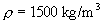; the pipe radius was 10 mm.
| Fitting | θ | R/r | Re(crit) | De(crit) |
|---|---|---|---|---|
| T-90 | 90° | 1.64 | 0.2 | 0.122 |
| S-45 | 45° | 1.84 | 0.2 | 0.109 |
| S-90 | 90° | 1.47 | 0.1 | 0.068 |
| L-90 | 90° | 6.72 | 0.5 | 0.074 |
Thus for the two 90° bends (T-90 was a tee-joint) we see that the critical Deborah numbers are very much closer (within 10%) than the corresponding critical Reynolds numbers (within 80%). The fact that all the estimated critical Deborah numbers are of the order of magnitude of 10-1 is consistent with the interpretation of the Deborah number as the ratio of elastic to viscous forces; it is at such Deborah numbers that the first signs of viscoelasticity might be expected. Of course, a more detailed investigation into the flow around pipe bends would be required to determine the contributions of inertia (Re) and viscoelasticity (De); this could involve either CFD or comparison with data from fluids known to be Newtonian.
We have clearly demonstrated that low-grade molasses is viscoelastic. Our preliminary estimate of the relaxation time for the sample studied is about one tenth of a second at 50°C, a value which is consistent with those found for beet molasses by Devillers and Phélizot (1971). This value would suggest that viscoelastic effects are probably not dominant in such vessels as vertical cooling crystallizers, where the typical residence time for any particular segment is at least of the order of seconds. More detailed and quantitative rheometry is indicated, particularly if future factory measurements show deviations from computer predictions based on generalized Newtonian rheological models.
The authors would like to thank Ken Miller and Craig Muddle (SRI) for useful discussions. The assistance of the staff at Victoria Mill is appreciated.
Awang, M., and White, E. T. (1976). Effect of crystal on the viscosity of massecuites. Proc. Qd Soc. Sugar Cane Technol. 43:263-270.
Behne, M. F. (1964). Viscometry in massecuites. Proc. Qd Soc. Sugar Cane Technol. 31:289-296.
Bhattacharyya, S., Boger, D. V., Halmos, A. L., and Tiu, C. (1972). Rheological properties of molasses and their use in the design of flow systems. Proc. Qd Soc. Sugar Cane Technol. 39:209-216.
Binnington, R. J., and Boger, D. V. (1981). Die swell: Empirical techniques and theoretical predictions. In Keentok, M. (ed.) Proc. Second Nat. Conf. Rheol.. 117-120. University of Sydney.
Bird, R. B., Stewart, W. E., and Lightfoot, E. N. (1960). Transport Phenomena. Wiley, New York. < Notes >
Bojcic, P., Khan, M. M. K., and Broadfoot, R. (1997). Estimating pressure losses in pipe fittings at low Reynolds numbers. Proc. Aust. Soc. Sugar Cane Technol. 19:479-484.
Cochrane, T., Walters, K., and Webster, M. F. (1981). On Newtonian and non-Newtonian flow in complex geometries. Phil. Trans. Roy. Soc. Lond. A301:163-181. < Notes >
Devillers, P., and Phélizot, R. (1971). Pseudo-plasticité et visco-elasticité des mélasses. Sucrerie Francaise 112:37-44.
Eggen, S., and Hinrichsen, E. L. (1996). Swell and distortions of high-density polyethylene extruded through capillary dies. Poly. Engg & Sci. 36:410-424.
Fredrickson, A. G. (1964) Principles and Applications of Rheology. Prentice-Hall, Englewood Cliffs, New Jersey. < Notes >
Geronimos, G. L., and Greenfield, P. F. (1978) Viscosity increases in concentrated sugar solutions and molasses due to dextrans. Proc. Qd Soc. Sugar Cane Technol. 45:119-126.
Harris, J. A., Robinson, J. A. and Vigh, S. (1995) Mathematical modelling of flow and heat transfer in a vertical crystalliser. Proc. Aust. Soc. Sugar Cane Technol. 17:216-221.
Keast, W. J., and Sichter, N. J. (1984). Vertical continuous crystallizer - Victoria Mill. Proc. Aust. Soc. Sugar Cane Technol. 6:293-299.
Lapasin, R., and Pricl, S. (1995) Rheology of Industrial Polysaccharides. Blackie Academic and Professional, London.
Larson, R. G. (1988). Constitutive Equations for Polymer Melts and Solutions. Butterworths, Boston.
Merrington, A. C. (1943). Flow of visco-elastic materials in capillaries. Nature 152:663.
Ness, J. N. (1984). In discussions of `Viscometry in cane sugar processing by J. N. Ness. Disc. Aust. Soc. Sugar Cane Technol. 6:100-101. < Notes >
Robinson, J. A. (1994). Determinations of flow patterns in a vertical crystalliser using computational fluid dynamics. BE thesis, Department of Mechanical Engineering, James Cook University of North Queensland.
Seriai, M., Guillet, J., and Carrot, C. (1993). A simple model to predict extrudate swell of polystyrene and linear polyethylenes. Rheol. Acta 32:532-538.
Sima, M. A., and Harris, J. A. (1997). Modelling of a low grade vertical cooling crystallizer using computational fluid dynamics. Proc. Aust. Soc. Sugar Cane Technol. 19:448-455.
Sima, M. A., and Harris, J. A. (1999). Numerical modeling of flow in a vertical cooling crystallizer. J. Fluids Engg 121:148-154.
Steindl, R. J. (1995). Optimum performance through CFD modelling of clarifier designs. Proc. Aust. Soc. Sugar Cane Technol. 17:207-215.
Steindl, R. J. (1997). Clarification improvements through the application of CFD. Eleventh Annual Users Conference Proceedings. Compumod.
Tanner, R. I. (1970). A theory of die-swell. J. Poly. Sci. Pt A-2 Poly. Phys. 8:2067-2078.
Tanner, R. I. (1988). Engineering Rheology, revised ed., Clarendon, Oxford.
Truesdell, C. (1974). The meaning of viscometry in fluid dynamics. Ann. Rev. Fluid Mech. 6:111–146.